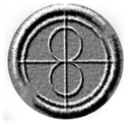
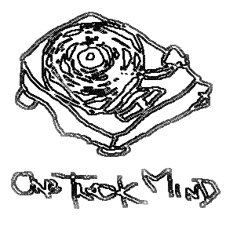
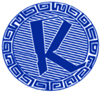
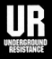

<html>
<head>
<title>. . .parallel orbits. . .</title>
</head>
<body bgcolor="#ffffff" text="#352015" link="#001070" vlink="#9F5F5F" alink="#dddddd">
<p align=right>
<font size=2>
__<a href="../ele_mental.html">home</a>
__<a href="../new/">new</a>
__<a href="../what/it.is.html">what</a>
__<a href="../who/">who</a>
__<a href="../what.was/">what.was</a>
__<a href="../what.will.be/">what.will.be</a>
__<a href="../21/">21/22 corp</a>
__<a href="../(23)/">(23)</a>
__<a href="../ele_ment/">ele_ment</a>
__<a href="../ele_ment/think/">think</a>
__orbits</a>
</font></p>
<br><br>

<table width=85% border=0><tr><td width=40%>
<a href="./overview.html"></a></td>


<td align=right><font size=2>
__<a href="overview.html">overview</a>
__<a href="./outer.html">outer</a>
__<a href="./parallel.html">parallel</a>
__<a href="./local.html">local</a>
__<a href="./alternate.html">alternate</a>
__<a href="counter.html">counter</a>
__<a href="./old.links.html">old</a>
</font><br><br></td>

<tr><td width=40%></td>
</tr>
</table>

<table width=85% border=0>
<tr><td width=40% valign=top>
</td>

<td width=3% valign=top></td>

<td valign=top>
<font size=2><b>P A R A L L E L . O R B I T S</b><br>
<i>groups and collectives on similar paths</i><br><br><hr></td>


<tr><td width=40% valign=top align=right>
<a href="http://members.aol.com/interanimi/index.html"></a><br></td>

<td width=3% valign=top></td>

<td valign=top>
<font size=2>

<a href="http://members.aol.com/interanimi/index.html">inter animi</a>detroit::<br><br>

"<b>inter animi</b> [loosely translated as "among souls"] has carried their symbol from the beginning which represents eternal medicine-eternal life. inter animi uses technology to convey its messages about the relationship of our global village and mass communication in todays society. . . inter animi's projects include: performance art, guerrilla (spontaneous performance in public), installations, and audio/visual atmospheric creation. we use a wide variety of visual media such as video, audio, film, slides, light, photgraphy, etc. as well as electronic/found objects such as synthesizers, theremins, sensors, modified instruments, metal sculptures, misc. communication devices, and "junk". <b>I.A.</b> also uses controlled chaos devices such as pyrotechnics and fire.<br><br>

inter animi's main objective is to bring together the many experimental artists of the metro-detroit area and offer a "silent" yet very active network dedicated to the development and increased awareness of experimental
artforms. inter animi now run a gallery - performance space entitled <b>critical</b>. the space is devoted to the preservation of detroit's underground art and music culture."
<br><br><hr></td></tr>


<tr><td width=40% valign=top align=right>
<a href="http://www.sirius.com/~jclayton/otm/"></a><br></td>

<td width=3% valign=top></td>

<td valign=top>
<font size=2>

<a href="http://www.sirius.com/~jclayton/otm/
">one track mind</a>san francisco::<br><br>

a self-described group of "dorks and losers who have decided to throw underground parties."  <b>one track mind</b> takes a deep interest in the music of detroit and chicago, and has slowly forged a place for midwest-styled electronic dance music in the psychedelically-inclined bay area.  our good ele_friend <b>jon santos</b> is a founding member of <b>otm</b> and has done his best to promote the sounds of his detroit hometown.
<br><br><hr></td></tr>


<tr><td width=40% valign=top align=right>
<a href="http://www.hyperreal.org/music/labels/R/"></a><br></td>

<td width=3% valign=top></td>

<td valign=top>
<font size=2>

<a href="http://www.hyperreal.org/music/labels/R/">reinforced records</a>UK::  <br><br>

<b>reinforced</b> has pioneered new forms of drum'n'bass since 1990, breakin' sound barriers with their innovative style that takes the drum'n'bass formula and infuses it with science fiction, jazz, and electronic elements.  these sounds provided us with a prototype of possibilities, a living example of what the jarring, frenzied sample manipulations of drum'n'bass music could sound like when they were constructed with a deep appreciation of jazz, hip-hop, dub, funk, electro, and techno.<br><br>

we are proud to count <b>dego mcfarlane</b> and <b>mark clair</b> as our friends, traveling with them through their many extrapolations as <b>4 hero</b>, <b>tek 9</b>, <b>manix</b>, <b>tom & jerry</b>, <b>maximmum style</b>, and <b>jacob's optical stairway</b>.  through each incarnation, their primary concerns have been to broaden the horizons of drum'n'bass, trailblazing a path that few have dared to follow.  we owe a great deal to the sounds that reinforced has given us, as they take a more overground path with their own music as 4 hero, and move back into underground with a new roster of sound specialists and their uncompromising label aesthetic.
<br><br><hr></td></tr>


<tr><td width=40% valign=top align=right>
<a href="http://www.submerge.com/"></a><br></td>

<td width=3% valign=top></td>

<td valign=top>
<font size=2>

<a href="http://submerge.com/">submerge</a>detroit::   <br><br>

the techno epicenter of detroit, <b>submerge</b> is more than just a label, distribution company, or business.  it is a political entity, an ideal, and a positive force for change.  as the home of <b>mike banks</b>, <b>juan atkins</b>, and the many musicians and labels it represents, <b>submerge</b> is a different approach to urban renewal, keeping itself centered on the artistic activity of local, electronic musicians of color, while embracing other cultures, and promoting a global electronic music movement.  <b>submerge</b> has done all of this by maintaining their base of operations in the center of detroit's crumbling, devastated downtown.  since the early 1990s, they have remained in their warehouse at 2030 grand river; undaunted by politics, threats of demolishment, and the urban pressure that surrounds them.
<br><br></td></tr>

<tr><td width=40% valign=top align=right>
<a href="http://www.submerge.com/"></a><br></td>

<td width=3% valign=top></td>

<td valign=top>
<font size=2>

<b>the underground resistance</b> is the vision of <b>'mad' mike banks</b>, a techno pioneer and militaristic spokesperson for the worldwide electronic music underground.  founded by <b>banks</b> along with honorary lifetime member <b>jeff mills</b> in 1990, <b>UR</b> have created a conceptual electronic ouvre that spans across saturn's rings, the myths of the lost city of atlantis, the depths of the peruvian jungle, and the harsh realities of detroit city life.  
<b>banks</b>, along with his label cohorts <b>suburban knight</b>, <b>rolando</b>, <b>drexciya</b>, <b>scan 7</b>, <b>andre holland</b>, and others, represent an extreme alternative to the commodification of electronic dance music which "the programmers" seek to control, subvert, and exploit for their own means.  <b>UR</b> sabotages the programmers from below, while reaching out to their own community through music, ideology, positive feedback, and by their very presence deep in the neglected wasteland of downtown detroit.<br><br>

ele_mental owes an immense debt to the ideas, music, and methods of <b>the underground resistance</b>.
<br><br></td></tr>


<tr><td width=40%></td><td width=3%></td>
<td align=right><font size=2>
__<a href="overview.html">overview</a>
__<a href="./outer.html">outer</a>
__<a href="./parallel.html">parallel</a>
__<a href="./local.html">local</a>
__<a href="./alternate.html">alternate</a>
__<a href="counter.html">counter</a>
__<a href="./old.links.html">old</a>
</font><br><br></td></tr>


</table>


.
<br><br>
.
<br><br>
<a href="../ele_mental.html">.</a>
<br><br>

<font size=1><a href="../ele_mental.html">
<br>
home</a><br><br>

<i>+ this page updated 25 july 98</i>
</font>
</font>
</body>
</html>
